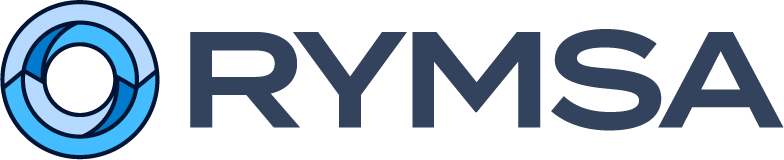
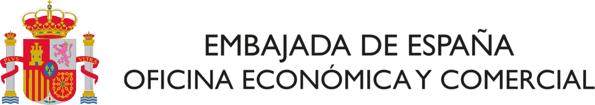
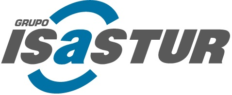
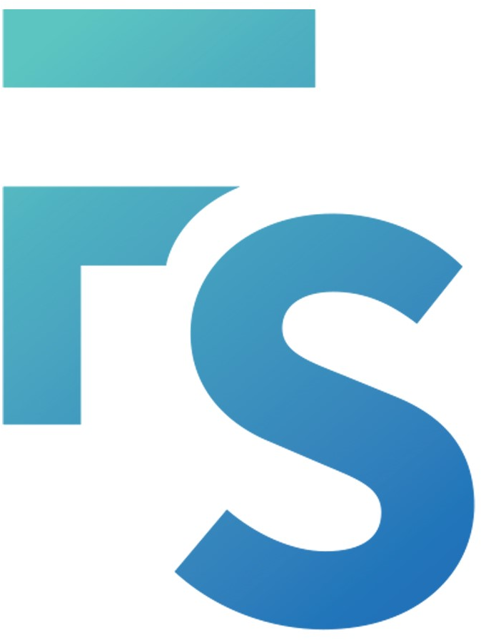

Experiencia
Coordinador de Compras y Comercio Internacional
1 año
Rymsa Manufacturing S.A.P.I. de C.V.
|
México
Coordiandor de compras, gestión de la cadena de suministro internacional, implementación de los estándares de calidad, negociación con proveedores y aseguramiento del suministro a las operaciones de producción.

Agregado de Embajada
1 año
Oficina Económica y Comercial de la Embajada de España
|
Ghana, Liberia y Sierra Leona
- Analista de Mercado en sectores como el automotriz, la defensa y la maquinaria industrial.
- Consultor en detección de fraude. Análisis de scam y phishing.

Gestor Documental y Ventas
6 meses
Isastur
|
España
- Gestor documental, de clientes y planos de instalaciones.

Diseñador y Gestor de Proyectos
2 años
Ekide México S.A. de C.V.
|
México
- Diseñador CAD de checking fixtures en NX Unigraphics para Tier 2 automotriz.
- Gestor integral de 32 proyectos de diseño y fabricación.
Diseñador y Gestor de Proyectos
8 meses
Fractal Systems FZ. LLC.
|
Emiratos Árabes Unidos (e instalaciones en Japón)
- Diseñador CAD de instalaciones electromecánicas en NX Unigraphics.
- Supervisor en la fabricación y logística de equipos para eventos internacionales.

Analista de Calidad
6 meses
Teknia Automotive
|
España
- Selección y toma de datos de producción y calidad.
- Diseñador de hojas cálculo para el análisis estadístico.
Estudios
Ingeniería Informática
En Curso
UNED
|
España (Remoto)
Full Stack
En Curso
Bottega University
|
EE.UU. (Remoto)
Posgrado en Estrategias de Internacionalización Empresarial
Gobierno Vasco
|
España
Máster en Ciencias de la Ingeniería
Universidad de Uppsala y Gävle
|
Suecia
Grado en Ingeniería Mecánica
Universidad del País Vasco
|
España
Habilidades
NX Unigraphics
VSCode
Java
Python
HTML/SCSS
ESP32
Idiomas
Euskera
Español
Inglés